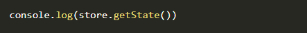
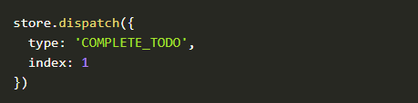
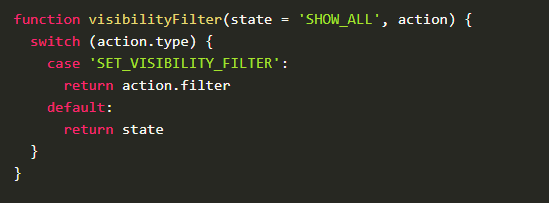
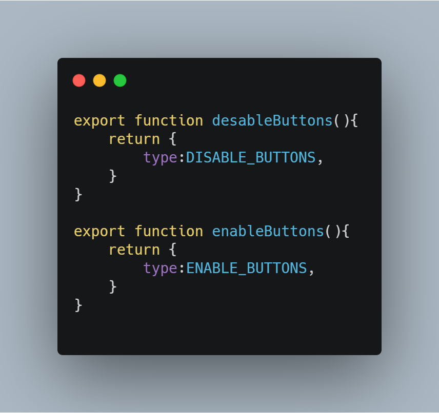
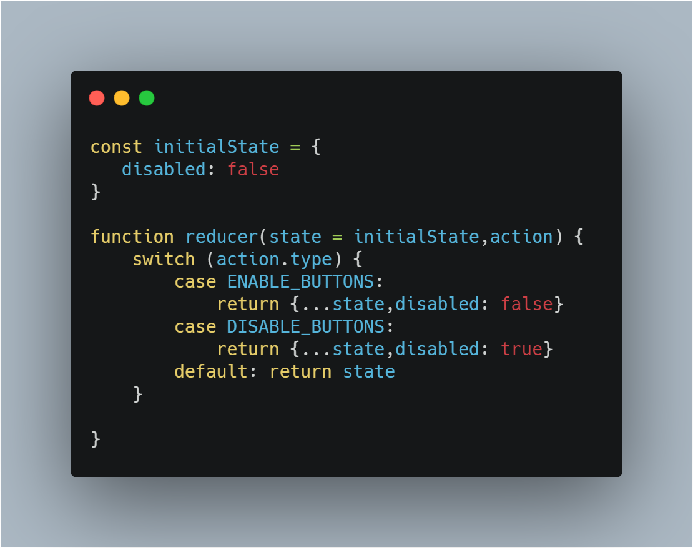
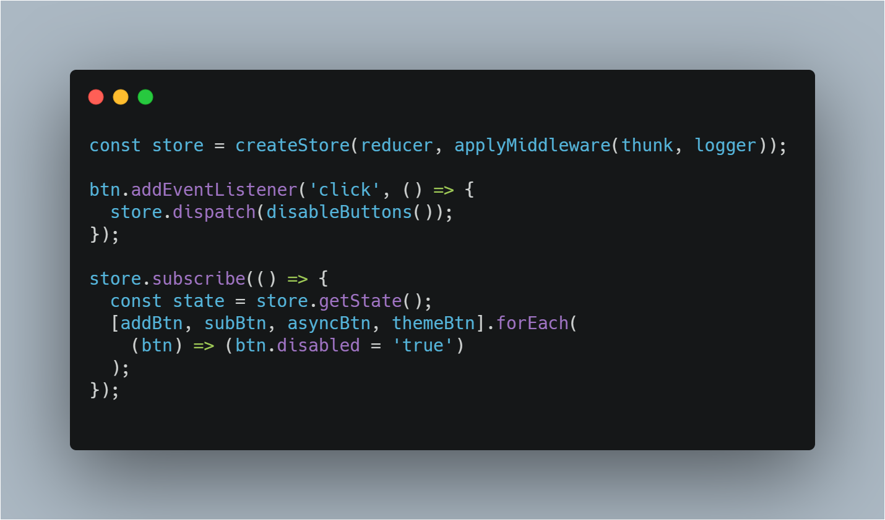

Redux
state management library
Presentation by katrin-kot
Redux is an open source JavaScript library for managing application state.
The library was created in 2015 by Daniel Abramov and Andrew Clark. The first version Abramov created in preparation for the React Europe conference. According to Abramov, he tried to create an implementation of the Flux idea with a different logic.
Redux can be described in three fundamental principles:
- Single source of truth. 
- State is read-only 
- Changes are made with pure functions 
Main selling points:
- Redux helps you write applications,run in different environments and are easy to test.
- Redux is compatible with many other frameworks like React, Angular and even pure JavaScript.
- The entire state of an application is stored in one central location.
- The Redux DevTools make it easy to trace your application's state changed.
- Redux works with any UI layer, and has a large ecosystem of addons to fit your needs.

What is a state?
The data that defines the condition of a system
To-do list items, user auth information, Facebook posts etc...

Examples
actions.js
Examples
reducer.js
Examples
index.js
The component responds to what happens in other components(pattern observer)